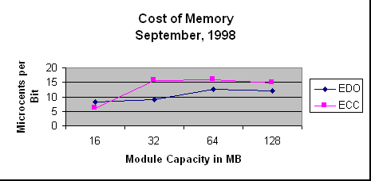

Cost of Memory Graph

The graph shows that in general, the cost per bit increases with the
capacity of the storage module, but not uniformly.
There are a few points to observe about the structure of this graph,
aside from the information content:
- The Y axis is used to represent the values computed from the
numbers provided. In general, the Y axis represents the dependent
variable, and the X axis represents the independent
variable.
- The data points are connected with straight lines. Unless you are
doing "curve fitting," which means to develop a formula to represent
the shape of the function, never use curved lines to connect data
points.
- The Unit size for the Y access is microcents per bit. You were
asked to calculate the cost in cents per bit, but you should scale the
data so that the axis can be labeled with integer values.
- The title of the graph conveys the overall content of the graph,
and the axis labels give the units of measure used for the numerical
values shown.